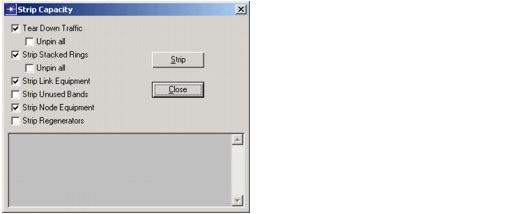

Dimensioning > Strip Capacity
Strip Capacity
You can undo the effects of a dimensioning action using the Strip Capacity dialog box (Design > Strip Capacity). This dialog box includes options for tearing down traffic and stripping network capacity.
Figure 7-5 Strip Capacity Dialog Box

| Home © 1987-2007 OPNET Technologies, Inc. All Rights Reserved. This software may be covered by one or more U.S. Patents. See complete patent notice in the Legal Notices section. OPNET Support Center |